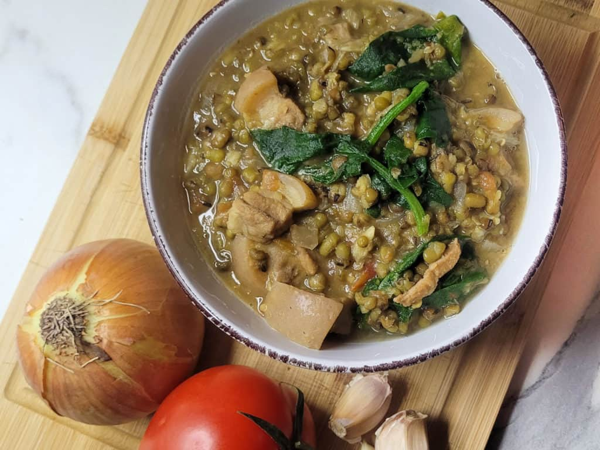

Monggo (Mung Bean Soup)

Ingredients
- • 1 cup mung beans, rinsed
- • 5 cups water
- • 200 grams pork belly, sliced into small pieces
- • 2 cups spinach or malunggay leaves
- • 1 medium onion, chopped
- • 3 cloves garlic, minced
- • 2 medium tomatoes, chopped
- • 1/2 cup chicharon (pork cracklings), optional
- • 2 tbsp fish sauce
- • Salt and pepper to taste
Instructions
- In a pot, boil the mung beans in water until tender (about 30-40 minutes). Set aside.
- In a separate pan, sauté garlic, onion, and tomatoes until softened.
- Add the pork belly and cook until browned.
- Pour the boiled mung beans (along with the liquid) into the pan. Mix well.
- Season with fish sauce, salt, and pepper to taste. Simmer for 10 minutes.
- Add the spinach or malunggay leaves and cook for another 2-3 minutes.
- If desired, sprinkle chicharon on top before serving.
- Serve hot with steamed rice.